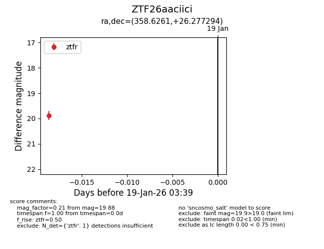
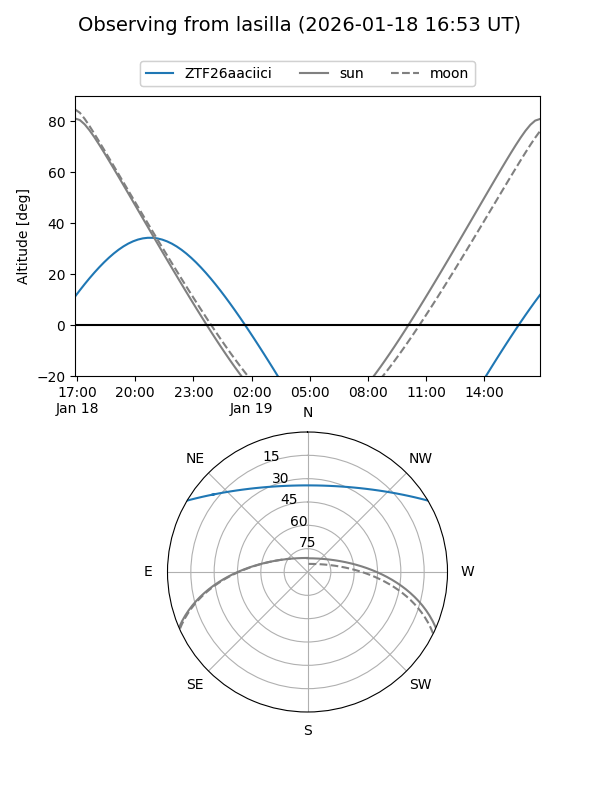
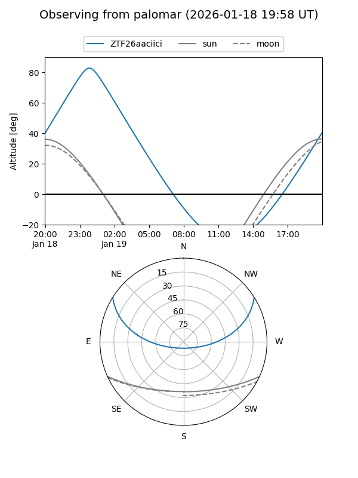

ZTF26aaciici
Target ZTF26aaciici at 2026-01-19 03:40
Aliases and brokers:
FINK: link
Lasair: link
ALeRCE: link
alt names
ZTF26aaciici (ztf,fink_ztf)
Coordinates:
equatorial (ra, dec) = 358.6261,+26.27729
equatorial (HMS+DMS) = 23:54:30.27,+26:16:38.26
galactic (l, b) = (107.3453,-34.86536)
Flags:
Photometry:
last ztfr=19.88
1 ztfr detections
Lightcurve

Visibility


Additional plots